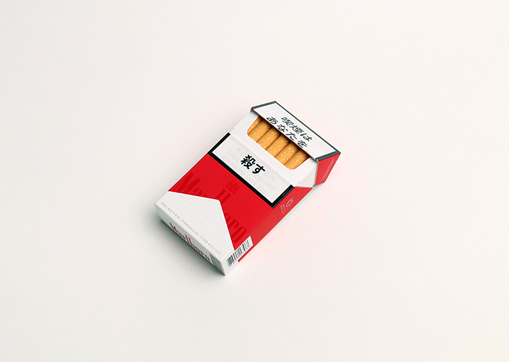

www.the-s-s-c.com
instagram|
SSC Size: 53 x 42 (mm) Quantity: 18 ea. = 2 sheets x 9 ea. (one w/ cutting line on front and the other w/o cutting line on back)  Uses: decorationg, covering, promotions and much more... @sscsscsscsscsscssc www.the-s-s-c.com |